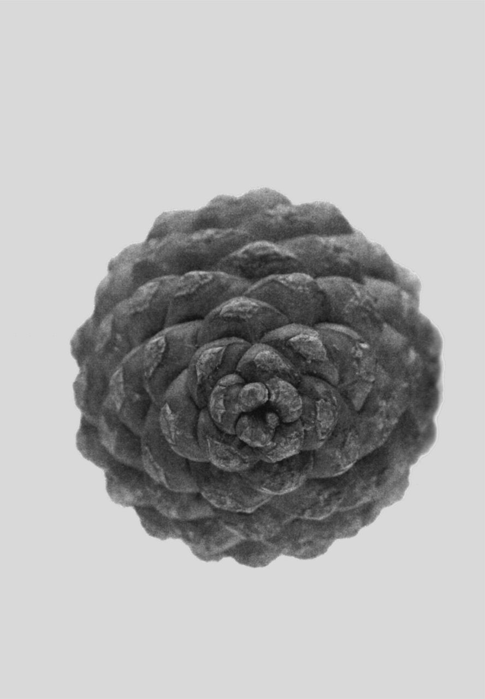

88 无穷性的奇迹和挫败
数学概念：无穷性
人人都见过表示无穷的符号———一个平躺的8字形符号（∞），但什么是无穷，它和数学有什么关系？
无穷有时被当成一个可能很大的数，这种理解并不准确。无穷并不是一个数，而是一个概念，表示无限、无尽和无边，它在数学里反复出现。我们说，π小数点后的数是无穷的，1除以3的商也是如此。在几何学中，我们说，一条直线上有无穷个点，直线向两端无限延展。在数学领域，无穷既是一个“本地人”，又是一个“外来户”。
艺术中也存在无穷。M．C．埃舍尔曾画过蚂蚁沿着一条莫比乌斯带，在没有终点的旅程中爬行。在名为《巴别塔图书馆》的短篇小说中，作者豪尔赫·路易斯·博尔赫斯想象那里有无穷无尽的书，包含了每一种可能的字母和标点组合，收藏着每一本已经出版和将要出版的书。
无穷的概念也激发了一些听起来有些古怪的想法。在19世纪晚期和20世纪初期，数学家乔治·康托尔提出可能存在不同大小的无穷性，自然数（1，2，3，4，…）和实数（包括π，1／3和45．6778765等）都是无穷的，但实数的无穷性大于自然数。对无穷性的思考有助于我们理解其他一些与直觉相反的概念。你可能觉得，1英尺长的线段上的点肯定比无限长的直线上的点少，但其实两条线上的点都是无穷的。
虽然无穷性令人着迷，但和很多与数学相关的概念一样，它也让我们觉得困惑和沮丧。
有穷论
并不是所有的数学家都接受无穷的概念。数学哲学有一个分支被称为有穷论，它的拥护者坚信，只有有穷的物体才是真实的，正如数学家利奥波德·克罗内克所说：“上帝只创造了自然数，其余都是人做的工作。”
